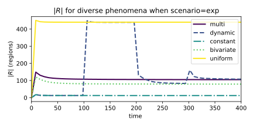
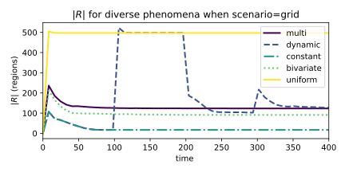
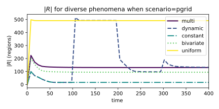
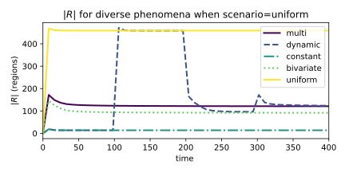
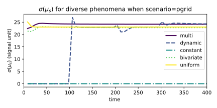
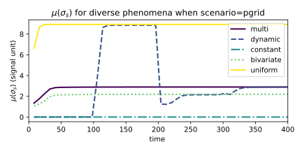
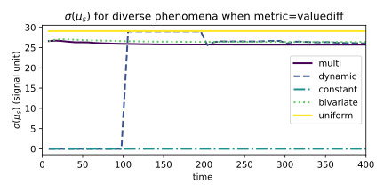
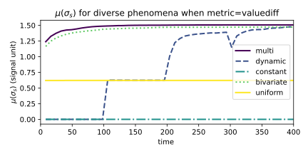
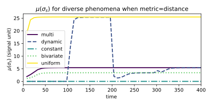

Space-fluid Adaptive Sampling: a Field-based, Self-organising Approach
- Roberto Casadei
- Stefano Mariani
- Danilo Pianini $\Leftarrow$ it’sa mee
- Mirko Viroli
- Franco Zambonelli
Pollution monitoring and counter-action
- Context - Air pollution sensors distributed in a geographical area
- Distribution is irregular and may change with time
- Of course sensors’ readings change with time, too
- Goal - apply specific policies to areas where pollution is too high
- e.g., limit thermal cars traffic, limit non-electric heating, etc.
- Strategy - Find a way to group sensor readings in space
- One area $\to$ one reading $\to$ one policy
Idea
Partition the space based on both
- geographical contiguity and
- “coherence” of sensors’ readings
We want to obtain the largest possible regions (as few of them as possible) while keeping the error under control
$\to$ with no central coordinator
Aggregate sampling
- A stabilising computation
- eventually static input $\to$ eventually stable output
- producing a regional partition field
- A stabilising field
- Contiguous in space
- by accumulating an aggregate sampling error
- Any monothonic function $f: \mathbb{R}\times\mathbb{R}^*\to\mathbb{R}_{>0}$ measuring the error between the local data and its surroundings
- Accumulated through a monothonically increasing function
- and keeping it under a threshold $\eta$.
- The partition border is where the error threshold is reached
Aggregate-computing-based solution

- Every device proposes itself as a valid candidate with some strength
- The strength may be the sensor reading, but any policy is fine

- Candidacy get exchanged. Here, both distance and variance accumulate error
- If they are within the allowed error $\eta$, they compete and the strongest survives
- Max distance: 2-hop: some areas stop spreading
- “Leader” devices have dashed border, some lose their status in the process
- Until the situation is stabilised
- We can visualise the partitions

- Also hiding the node location

- And consider an output value for the whole area (in this case, the average)

- Same as before, but colors are mapped to values

Actual Implementation
A reusable artifact has been produced for this work
The implementation is in the process of being merged into the Protelis-lang library
def aggregateSampling(uid, strength, radius, metric, distance) {
share (lead, nbrLead <- [uid, [strength, 0]]) {
alignedMap( // Expand a "bubble" with the local information
[nbrLead], // Remove "bubbles" that accumulated too much error
{ candidate, breaker -> candidate==uid || foldMin(∞, breaker.get(1)+metric()) < radius },
{ candidate, breaker -> // Let overlapping bubbles compete
let gradient = distance(source) // error accumulation
[gradcast(uid==candidate && idOf(lead)==uid, strength, gradient, identity), gradient]
}, // default to the worst value if no valid bubble is present in the neighborhood
[-∞, ∞] // Then select the area the device belongs
).fold(default) { a, b -> if (tieBreakerOf(a) > tieBreakerOf(b)) { a } else { b } }
}.get(0) // return the uid of the partition leader
}
Evaluation
Desiderata
- stabilisation: if the input is stable, the output must be stable
- high information (entropy): increase the number of regions to minimise errors
- error-controlled upscaling: create the minimum number of regions necessary to keep the error under threshold
Metrics
Assuming a set of devices $D$ partitioned into a set of regions $R = R_1 \cup \dots \cup R_{|R|}$ where each $R_r$ is a set of devices ${ D^{r}_1,\ \dots, D^{r}_{|R_r|} } $ and each device $D^r_d$ reads the local value of the tracked signal $s^r_d$:
- Region count $|R|$
- Mean region size $\mu_{R}$
- Standard deviation of the mean of the signal in regions $\sigma(\mu_s)$
- Proxy for inter-region diff.; high $\to$ regions differ with each other $\to$ better
- Mean standard deviation of the signal in regions
- Proxy for intra-region error, low $\to$ regions internally similar $\to$ better
- Std. dev. of the std. dev. of the signal in regions $\sigma(\sigma_s)$
- Proxy for partition consistency; high $\to$ regions behave differently $\to$ better
Topologies
regular grid
Topologies
irregular (perturbed) grid

Topologies
uniform random

Topologies
exponentially distributed
Spatial signals
- Constant: all sensors read the same value everywhere (baseline)
- Minimum number of large regions
- Uniform (random): sensors read a random value, maximum entropy (baseline)
- Maximum information, many small regions wanted
- Bivariate Gaussian: the signal is highest at the center of the network and progressively lower towards the edges
- Many small regions along the slope, few large regions at the network edge
- Multiple Bivariate Gaussians: three bivariates located along the diagonal
- Similar to the previous, but with different geometry (to intercept potential issues due to symmetry)
- Dynamic: the system cycles across the previous signals at pre-defined intervals
- useful to study the dynamics and self-stabilisation
Leader strength
- local signal value
- neighbourhood-mean of the signal value
- neighbourhood-variance of the signal value
Error accumulation metric
- distance (ignores the actual error)
- difference between the signal readings
- actually min($\epsilon$, $|s_a - s_b|$) where $\epsilon \in \mathbb{R_+}$, $\epsilon = 0$ iff $a=b$, $0 < \epsilon \ll 1$ otherwise (to preserve the triangle inequality)
- mix: product of the previous two metrics
Experiment setup


- Cartesian product of all topologies, signals, leader strenght functions, and error accumulation metrics
- 100 repetitions (with different seeds)
- 630 charts (available in the artifact repository)
- Data generation requires weeks on a normal PC
- $\to$ Generated data is provided in the repository for further data analysis
$\Rightarrow$ The behaviour looks self-stabilising (see the dynamic)
$\Rightarrow$ insensitive to device distribution: spatial signals drive the process
   
- Inter-region difference (left, the higher the more different)
- Intra-region consistency (right, the lower the more similar are the readings)
 
$\Rightarrow$ Regions tend to be very different with respect to each other
$\Rightarrow$ Regions remain internally consistent
(except for the random signal, too much entropy)
$\Rightarrow$ “Graceful” adaptation dynamics
$\Rightarrow$ The leader policy selection has little impact
$\Rightarrow$ Selecting more “central” leaders can help with stabilisation performance


$\Rightarrow$ The error metric and accumulation has large impact
$\Rightarrow$ Both inter-region (top) and intra-region (bottom)




Conclusion
We presented a distributed sampler sensitive to the spatial dynamics of the signal under observation
- Strives to find the balance between minimising the sampling error and minimising the region count
- Realises effective sampling, find as few as possible contiguous regions
- keeping intra-region error under a threshold
- not forcing any non-metric induced shape
TODO
- Investigate the relationship with time-fluid field-based coordination (Coord 2021)
- Prove self-stabilisation (rewrite the algorithm in a self-stab fragment)
- Improve the dynamics and its measurements